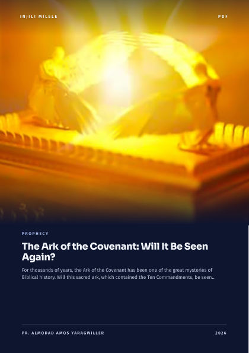
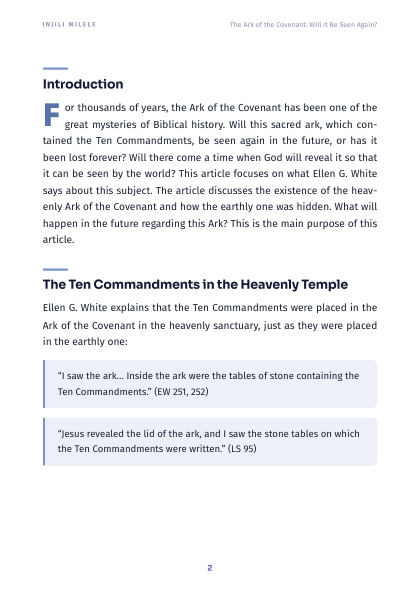
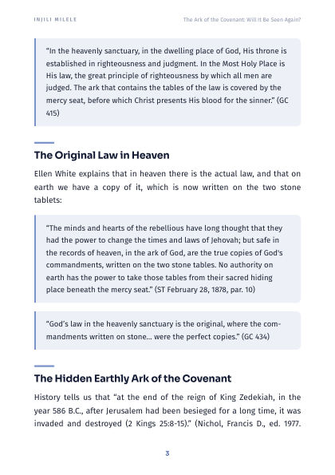

The Ark of the Covenant: Will It Be Seen Again?
For thousands of years, the Ark of the Covenant has been one of the great mysteries of Biblical history. Will this sacred ark, which contained the Ten Commandments, be seen again in the…
Inside this PDF
- Introduction
- The Ten Commandments in the Heavenly Temple
- The Original Law in Heaven
- The Hidden Earthly Ark of the Covenant
- The Revelation of the Future
- Two Events of Revelation
- Before the Return of Jesus:
- At the Glorious End of Christ's Reign:
- Conclusion
- 7 pages
- English
You have reached the end of the free preview
Get the full PDF to read it all — on your phone, computer or in print.
This PDF is available to buy
Buy once and read it on your phone or computer, or print it.



Related articles
The Millennium: 8 Key Insights You Must Know
Let us embark on a journey through the prophecies that unveil a pivotal era in the grand tapestry of God's plan – a thousand-year period, often referred to as the "millennium." While this…
What Did God Mean When He Told Jesus, "Today I Have Begotten You"?
The Bible speaks of several references that point to various events of Jesus' birth. There are also instances where it references conversations between God the Father and Jesus, where it…

Why Would God Create Lucifer?
Although the Bible gives only a few hints regarding this question, it is still impossible to provide a fully satisfactory answer to it in its entirety. This subject has not been addressed…